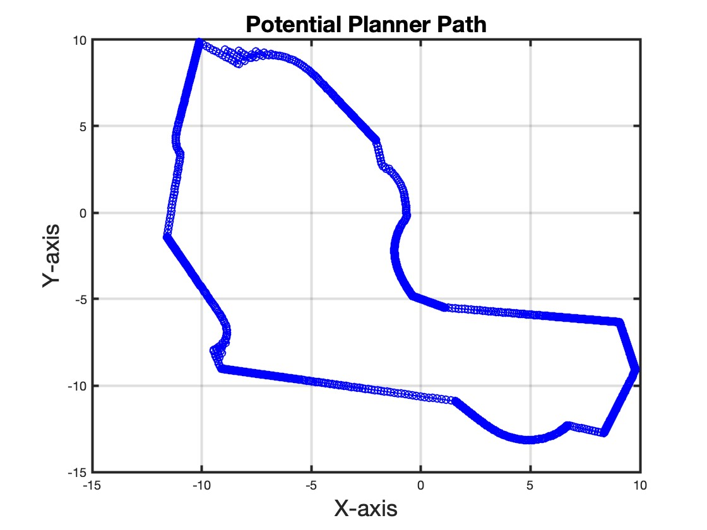
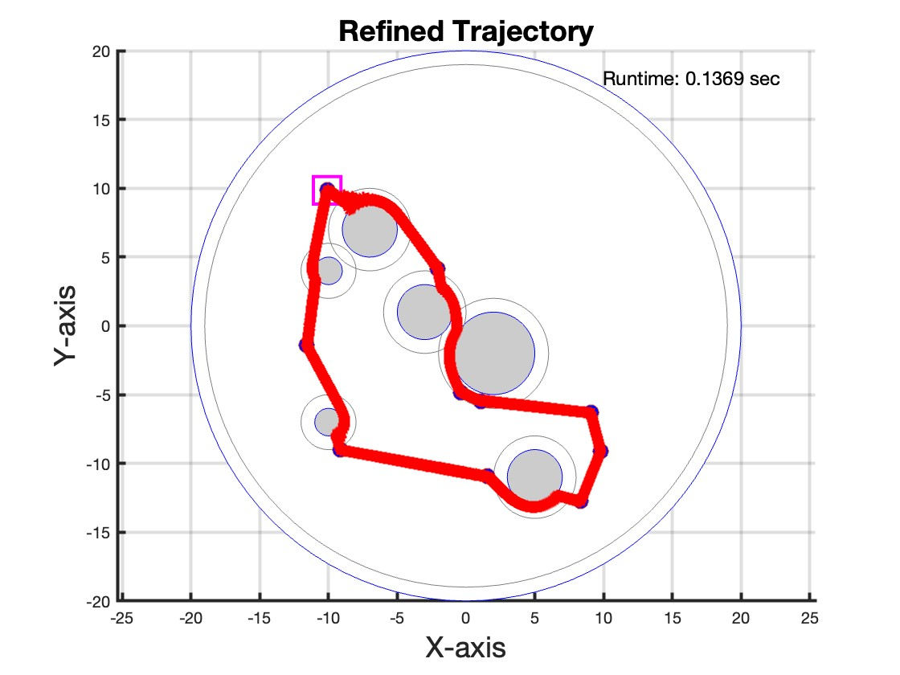
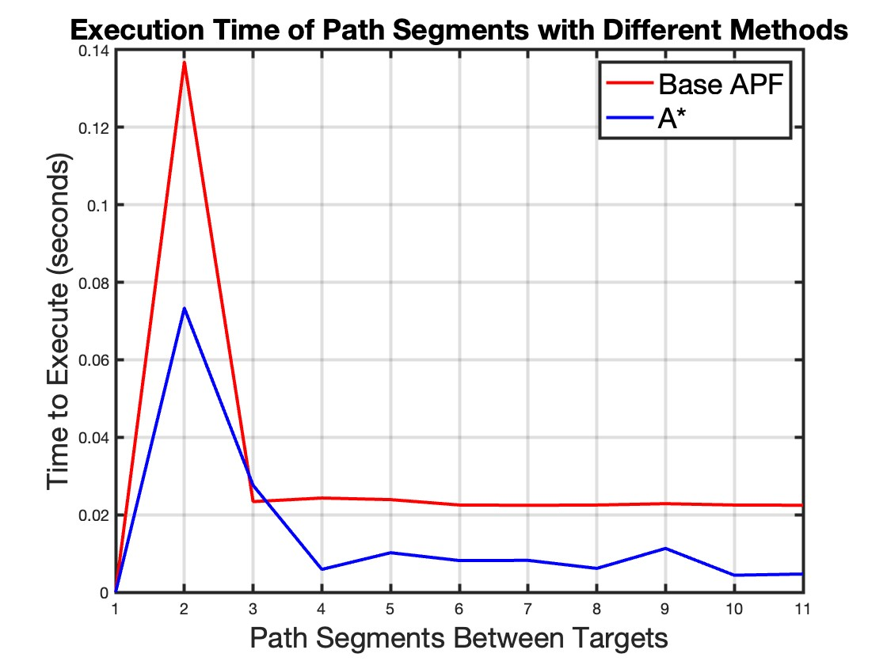

This project addresses the growing challenge of space debris removal through an innovative algorithmic approach that combines Artificial Potential Fields (APF) with Model Predictive Control (MPC). The system autonomously navigates through a static debris field to rendezvous with multiple large target debris objects in a single trip, optimizing for fuel efficiency and trajectory smoothness while avoiding collisions with non-target debris.
Complete APF-based trajectory visiting all target debris (blue dots) while avoiding obstacles (gray spheres)
Problem Statement
Space debris poses an escalating threat to current and future space missions, with over 29,000 tracked pieces larger than 10 cm as of 2023. The Kessler Syndrome—where increasing debris triggers cascading collisions—threatens to render orbital space inaccessible. Active debris removal is critical, but current approaches face significant challenges:
Inefficient fuel consumption in complex debris fields
Risk of collision with non-target debris during approach
Lack of integrated global path planning with local trajectory optimization
Proposed Solution: Integrated APF-MPC Algorithm
Our hybrid approach combines three key components to achieve efficient multi-target debris removal:
1. Polygonal Queue Ordering Algorithm
Developed a novel algorithm to determine the optimal sequence for visiting multiple target debris. The approach:
Identifies min/max target positions along the x-axis
Divides targets into two groups based on a line between extrema
Sorts targets to create a closed-loop polygonal path
Ensures path segments never cross, minimizing fuel consumption
Guarantees return to starting dock after collecting all targets
This ordering strategy is robust to randomized target locations and scales efficiently with the number of targets, providing a foundation for optimal mission planning.
2. Artificial Potential Field (APF) Path Planning
APF provides global trajectory planning by modeling the environment as a potential field:
Attractive Forces: Target debris generate attractive quadratic potentials that guide the spacecraft toward collection points
Repulsive Forces: Non-target debris create repulsive potentials that steer the spacecraft away from collisions
Gradient Descent Navigation: The spacecraft moves along the steepest descent of the combined potential field
Real-time Adaptability: Can operate without complete environmental knowledge or predefined obstacle shapes

Baseline APF trajectory showing oscillations and suboptimal smoothness
3. Model Predictive Control (MPC) Trajectory Optimization
MPC refines the APF-generated trajectory through predictive optimization:
Non-linear Kinematic Model: Predicts spacecraft state based on position, velocity, and control inputs
Cost Function Minimization: Balances tracking error, control effort, and trajectory smoothness
Receding Horizon Control: Iteratively optimizes over a prediction horizon of 20 steps
Constraint Handling: Addresses thruster saturation and velocity limits
Real-time Adaptation: Continuously updates control actions based on current system state

APF-MPC refined trajectory demonstrating smooth, fuel-efficient motion with significantly more waypoints
Algorithm Integration & Implementation
The complete system operates through the following workflow:
Target Identification: Identify locations of large target debris for collection
Global Path Planning: Generate initial trajectory using APF between each target pair
Local Trajectory Refinement: Apply MPC to optimize each path segment
Execution: Implement first control action and iterate through receding horizon
The system was implemented in MATLAB, leveraging its optimization toolbox for MPC computation and dynamic system modeling capabilities. The modular design allows for easy adaptation to different space environments and mission constraints.
Performance Results
The integrated APF-MPC algorithm demonstrated significant performance improvements over baseline methods:
A* algorithm trajectory with grid-based discretization (0.16 seconds runtime)
While A* achieved faster computation time (0.16s vs 0.34s for APF), our APF-MPC approach offers critical advantages for space applications:
Obstacle Prioritization: Greater emphasis on collision avoidance, crucial for irreversible space operations
Unknown Environments: Can operate without complete environmental knowledge or predefined obstacle shapes
Trajectory Quality: Produces smoother, more fuel-efficient paths suitable for thruster-limited spacecraft
Adaptability: Better handles irregular debris shapes that challenge grid-based planners

Execution time comparison: Base APF (red) vs A* algorithm (blue) across path segments
Key Technical Innovations
Thruster Saturation Management
The MPC framework explicitly handles thruster saturation constraints, a critical consideration for spacecraft with limited propulsion capability. By incorporating maximum acceleration and deceleration limits into the optimization problem, the algorithm ensures all commanded maneuvers are physically realizable.
Multi-Target Single-Trip Optimization
To our knowledge, this is the first implementation of single-trip multiple space debris collection. Previous research focused on either single-target missions or did not optimize the collection sequence. Our polygonal ordering algorithm ensures minimal fuel consumption across the complete mission.
Computational Efficiency
While the APF-MPC refinement introduces computational overhead (8,379 seconds for full trajectory vs 0.34 seconds for baseline APF), this represents offline planning that occurs prior to mission execution. The actual spacecraft follows the pre-computed optimal trajectory, making the approach suitable for long-duration space missions spanning multiple days.
Applications & Impact
This research contributes to the critical challenge of maintaining safe orbital environments:
Active Debris Removal: Enables efficient multi-target collection missions to remove high-risk debris
Collision Mitigation: Reduces risk of cascading collision events (Kessler Syndrome)
This work establishes a foundation for more advanced debris removal capabilities:
Dynamic Obstacles: Extend MPC framework to handle moving debris with real-time replanning
Orbital Dynamics: Incorporate gravitational effects and orbital mechanics into trajectory planning
Multi-Spacecraft Coordination: Develop distributed algorithms for cooperative debris removal
Uncertainty Handling: Integrate sensor noise and state estimation for robust autonomous operation
Hamiltonian Optimization: Improve queue ordering with true shortest-path solutions
Conclusion
The integrated APF-MPC algorithm successfully demonstrates a proof-of-concept solution for efficient multi-target space debris removal. By combining global path planning with local trajectory optimization, the system achieves dramatic improvements in fuel efficiency and trajectory quality compared to baseline methods. This research contributes to the ongoing effort to maintain sustainable access to orbital space in the face of growing debris populations.